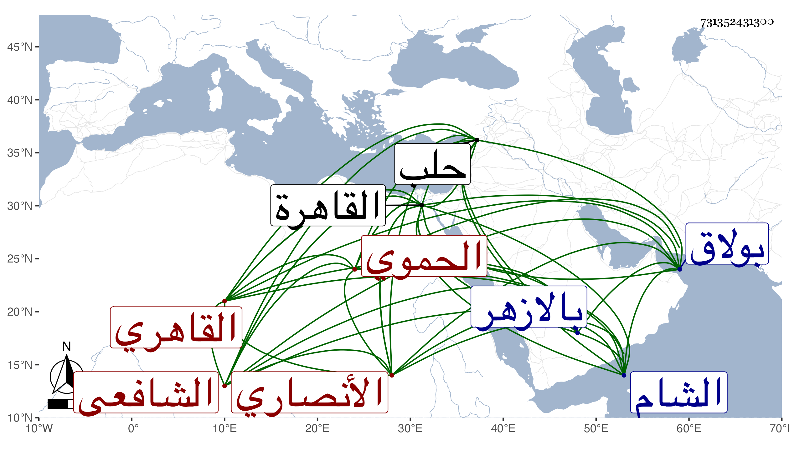

0902Sakhawi.DawLamic.ITO20230111-ara1.EIS1600.731352431300
Biography ID: 731352431300
443
عبد الرحيم بن أحمد بن محمد بن محمد بن عثمان بن محمد بن عبد الرحيم ابن إبراهيم بن هبة الله الزين بن الشهاب بن ناصر الدين أبي عبد الله الأنصاري الحموي الأصل القاهري الشافعي الماضي أبوه والآتي عمه الكمال محمد سبط ناصر الدين محمد بن العطار أمه سارة ويعرف كسلفه بابن البارزي . ولد في رمضان سنة ثمان عشرة وثمانمائة بالقاهرة ومات أبوه وهو صغير فرباه جده ثم عمه سيما وقد تزوج بأمه فنشأ فحفظ القرآن والزبد للشرف البارزي والورقات لامام الحرمين والشذور لابن هشام وبعض الحاوي وعرض على بعض الشيوخ واشتغل يسيرا ولم يتميز ولا كاد وسمع في صحيح مسلم علي الزين الزركشي وكذا سمع على غيره وولي الشهادة بالكسوة وغير ذلك ، وابتنى في بولاق قصرا هائلا لم يمتع به ، وحج مرارا جاور في بعضها مع الرجبية وفي أواخر أمره سافر مع صهره الأتابك ازبك وتوجه معه إلى حلب ثم رجع إلى الشام وعاد إلى القاهرة وهو متوعك فأقام بها أياما ثم مات في يوم الاثنين تاسع ربيع الثاني سنة أربع وسبعين وصلى عليه بالازهر ودفن بحوشهم عند الشافعي رحمه الله ، وترك عدة أولاد وكان مائقا أهوج لا يصلح لصالحة رحمه الله وعفا عنه
